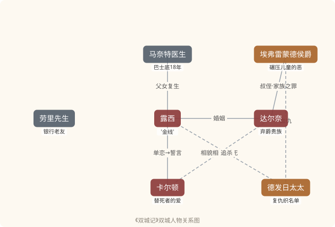

双城记
一、基本信息
| 作者 | 狄更斯 |
|---|---|
| 成书/出版 | 1859年出版（Britannica 语境：作者主要小说之一） Charles Dickens — Encyclopaedia Britannica（百科全书） |
| 国别/地区 | 英国 |
| 时代 | 近代 · 19世纪 |
| 体裁 | 长篇小说（历史小说） |
| 语言 | 英语 |

《双城记》双城人物关系图（人物关系图）
二、创作背景
历史背景：法国大革命（1775—1793）——伦敦与巴黎'双城'；德法南（Carlyle《法国革命史》1837）为狄更斯主要史源（通说待核——狄更斯自述随身携带此书）。
开篇名句：'It was the best of times, it was the worst of times...'（原文，公有领域）——'那是最好的时代，那是最坏的时代'。
结构与《圣诞颂歌》同源：牺牲与重生的宗教性（通说）。
三、内容脉络
复活与出狱：马奈特医生在巴黎巴士底狱被'活埋'18年后获释，被旧友劳里先生与女儿露西接往伦敦——'recalled to life'（复生，通说）。
双城恋爱：露西在伦敦受达尔奈（法国贵族后裔、自弃爵位）追求——马奈特因达尔奈家族的旧仇（侯爵马车碾死儿童、医生被关押18年的'控诉信'）内心挣扎但仍允婚（通说）。
革命爆发：1789年巴士底狱陷落——德发日太太（被侯爵家害死的姐姐）领衔的复仇；侯爵被刺、加贝尔受威胁，达尔奈为救老仆赴巴黎即被捕（通说）。
结局：法庭以马奈特狱中血书定达尔奈死刑；相貌酷似的卡尔顿（失意的英国律师）以爱情与誓言换脸替死——'It is a far, far better thing that I do, than I have ever done'（原文，公有领域）——断头台上的重生；德发日太太死于追杀露西一家途中（通说）。
四、主要人物表
| 人物 | 身份 | 说明 |
|---|---|---|
| 马奈特医生 | 被囚18年的医生 | 创伤与复生——'recalled to life'主题的承担者 |
| 露西·马奈特 | 医生之女 | '金线'——把所有人串起的爱的象征（原文意，待核） |
| 查尔斯·达尔奈 | 放弃特权的贵族 | 埃弗雷蒙德侯爵之侄——自我流放的良知 |
| 悉尼·卡尔顿 | 失意律师 | '替死者'——英国文学最著名的自我牺牲（通说） |
| 德发日太太 | 革命者·酒馆老板娘 | 织'名单'的复仇者——革命暴力的化身（通说） |
| 埃弗雷蒙德侯爵 | 达尔奈之叔 | '压死儿童后扔一枚金币'——贵族之恶的标本 |
五、主题与艺术特点
- 革命的双面性：压迫的必然与暴力的循环——'把它播进土里，它会结出一样的果'（原文意，待核）。
- 复活与牺牲：三个人物三次'recalled to life'——基督教牺牲叙事（通说）。
- 命运与巧合：相貌相似的替身——哥特式巧合（通说）。
- 艺术特点：开篇对偶排比、预言式结构（'回声与脚步'章）、历史与私事的交织。
六、影响与评论
- Britannica（Dickens 条）：A Tale of Two Cities 为其 major works 之一。
Charles Dickens — Encyclopaedia Britannica（百科全书） - 开篇名句成为英语最著名的小说开头之一（通说待核）。
Charles Dickens — Encyclopaedia Britannica（百科全书） - 改编：1935/1958电影与无数次舞台改编（通说待核）。
Charles Dickens — Encyclopaedia Britannica（百科全书） - 中译：石永礼/宋兆霖等译本（人民文学等，通说待核）。
Charles Dickens — Encyclopaedia Britannica（百科全书）
七、阅读建议
难点
- 法国大革命史背景（巴士底、革命法庭、恐怖统治）需要先读。
- 第三部节奏快、死亡密集——情感冲击强。
- 哥特巧合（双胞胎长相）以浪漫主义逻辑接受。
- 石永礼译《双城记》（人民文学出版社）：通行译本。
- 英文本：Penguin Classics（通说待核）。
通读三卷 → 精读开篇、'回声与脚步'（第19章）与结尾 → 对照 Carlyle《法国革命史》与电影。
八、待核实
- 连载（《一年四季》1859年4—11月，通称）与单行本细节待核。
- Carlyle 史源与狄更斯自述（1868年前言）待核。
- 石永礼译本信息待核。
- 开篇名句逐字核对照石永礼译本。